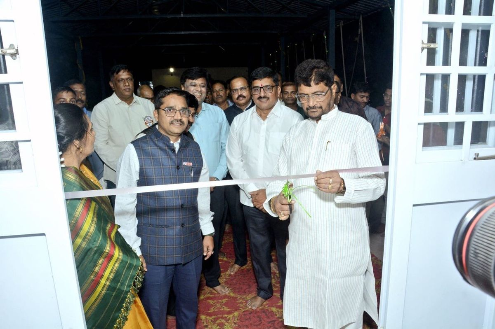

मा. यशवंतराव चव्हाण ग्रंथसंपदा
यशवंतराव चव्हाण यांच्या साहित्याचा आणि ऐतिहासिक संदर्भांचा अभ्यास करा.
मराठी, हिंदी आणि इंग्रजी बातम्या ऐका. शब्दसंपत्ती, अचूक उच्चार आणि भाषा कौशल्य विकसित करा.
आकाशवाणी – बातम्या ऐका ↗यशवंतराव चव्हाण यांच्या साहित्याचा आणि ऐतिहासिक संदर्भांचा अभ्यास करा.
पुस्तकाचे नाव, लेखक, प्रकाशक, विषय किंवा रजिस्टर क्रमांकानुसार शोधा. सध्या ११२ ग्रंथ नोंदी डिजिटल स्वरूपात उपलब्ध आहेत.
११२ नोंदी
| रजिस्टर क्र. | पुस्तकाचे नाव | लेखक | प्रकाशक | विषय |
|---|---|---|---|---|
| 1 | श्यामची आई | साने गुरुजी | विद्यार्थी गृह | बालसाहित्य |
| 2 | गाडगे महाराजांची पत्रे | संत तुकडोजी महाराज | सांगावा | बालसाहित्य |
| 3 | खरा मित्र | साने गुरुजी | केशव भि. ढवळे | बालसाहित्य |
| 4 | घामाची फुले | साने गुरुजी | केशव भि. ढवळे | बालसाहित्य |
| 5 | मनुबाबा भाग ३ | साने गुरुजी | केशव भि. ढवळे | बालसाहित्य |
| 6 | फुलाचा प्रयोग भाग ४ | साने गुरुजी | केशव भि. ढवळे | बालसाहित्य |
| 7 | मनुबाबा | साने गुरुजी | केशव भि. ढवळे | बालसाहित्य |
| 8 | बारकू | राजा मंगळवेढेकर | ज्योत्स्ना | बालसाहित्य |
| 9 | मुलांसाठी गोष्टीरूप चाणक्य | श्रीकृष्ण जोशी | अंजनी | बालसाहित्य |
| 10 | अरबस्थानची परी | शांताराम पाटील | सेंट्रल | बालसाहित्य |
| 11 | संस्कारफूल | मधुकर वेदांते | सन्मित्र | बालसाहित्य |
| 12 | अल्लाउद्दीन जादूचा दिवा | आशा जोशी | सेंट्रल | बालसाहित्य |
| 13 | जादूचा राजहंस | व. पु. काळे | अनमोल | बालसाहित्य |
| 14 | गंमत शेखचिल्लीची | आशा काळे | सेंट्रल | बालसाहित्य |
| 15 | सिंहासन बत्तीशी | मंदा बोडस | सेंट्रल | बालसाहित्य |
| 16 | नल दमयंती | रमेश मुधोळकर | अनमोल | बालसाहित्य |
| 17 | गमतीच्या गोष्टी | वि. कृ. नेरूरकर | केशव भि. ढवळे | बालसाहित्य |
| 18 | मनोहर कथा | पंढरीनाथ रेगे | शब्दरंजन | बालसाहित्य |
| 19 | वेताळ पंचविशी | मंदा बोडस | सेंट्रल | बालसाहित्य |
| 20 | स्वराज्याची कहाणी – १ | मो. ग. तपस्वी | नॅशनल बुक ट्रस्ट | बालसाहित्य |
| 21 | सण आणि उत्सव | समीक्षा हबळे | श्रद्धा | बालसाहित्य |
| 22 | स्वराज्याची कहाणी – २ | यदुनाथ थत्ते | नॅशनल बुक ट्रस्ट | बालसाहित्य |
| 23 | हात तुटलेला घोडेस्वार | रा. कृ. जोशी | जयहिंद | बालसाहित्य |
| 24 | अमिताभची शिकार | रेखा बर्वे | मुक्ता | बालसाहित्य |
| 25 | मायावी मांजरी | विनय नांगरे | अनमोल | बालसाहित्य |
| 26 | राजपुत्र जय आणि मांत्रिक | सुरेश वैद्य | अनमोल | बालसाहित्य |
| 27 | शापित राजपुत्र | प्रकाश कुलकर्णी | अनमोल | बालसाहित्य |
| 28 | जादूची मधमाशी | मनोहर देवधर | जयहिंद | बालसाहित्य |
| 29 | जादूची पेटी | मीरा कंठक | जयहिंद | बालसाहित्य |
| 30 | साहसी राजकन्या | सुजाता नाईक | अनमोल | बालसाहित्य |
| 31 | नमस्कारांचा चमत्कार | रा. कृ. जोशी | जयहिंद | बालसाहित्य |
| 32 | यक्षराजाचा शाप | महेंद्र पखवकर | दिलीपराज | बालसाहित्य |
| 33 | झुंजारचा आनंद | बाबूराव अर्नाळकर | रम्यकथा | बालसाहित्य |
| 34 | अमृताची झारी | मुक्ता केणेकर | जयहिंद | बालसाहित्य |
| 35 | हेनाच्या शोधात अमिताभ | रेखा बर्वे | मुक्ता | बालसाहित्य |
| 36 | अग्निकन्येचे कर्म | रामचंद्र जोखर | अनमोल | बालसाहित्य |
| 37 | गप्पीदासाची फजिती | भालचंद्र वैद्य | केशव ढवळे | बालसाहित्य |
| 38 | जादूचा आरसा | पंढरीनाथ रेगे | अनमोल | बालसाहित्य |
| 39 | महाबळी | पंढरीनाथ रेगे | अनमोल | बालसाहित्य |
| 40 | मुलांसाठी शंभर विनोद | रमेश मुधोळकर | अनमोल | बालसाहित्य |
| 41 | सप्तचिरंजीव | रमेश मुधोळकर | अनमोल | बालसाहित्य |
| 42 | मैत्री | वि. ग. कुलकर्णी | अनमोल | बालसाहित्य |
| 43 | पुराणाच्या गोष्टी | वि. ना. चिटणीस | यशवंत | बालसाहित्य |
| 44 | मांजरीचे पिल्लू | निशा ढंके | अमोल | बालसाहित्य |
| 45 | अमृतपुत्र विवेकानंद | दत्ता टोपे | चंद्रकला | चरित्र |
| 46 | डॉ. आंबेडकर | राजा मंगळवेढेकर | ज्योत्स्ना | चरित्र |
| 47 | नेताजी सुभाषचंद्र बोस | रमेश मुधोळकर | अनमोल | चरित्र |
| 48 | राणी लक्ष्मीबाई | चंद्रकांत इंदुरे | नितीन | चरित्र |
| 49 | स्वातंत्र्यवीर सावरकर | विनायक डंके | अनमोल | चरित्र |
| 50 | लाल बहादूर शास्त्री | रमेश मुधोळकर | शिवानी काकडे | चरित्र |
| 51 | गाडगेबाबांच्या गोष्टी | राजा मंगळवेढेकर | अनमोल | चरित्र |
| 52 | पंडिता रमाबाई | विजया देशपांडे | अनुबंध | चरित्र |
| 53 | विनोबा भावे | रमेश मुधोळकर | अनमोल | चरित्र |
| 54 | इंदिरा गांधी | रमेश मुधोळकर | अनमोल | चरित्र |
| 55 | Saint Eknath | Dr. S. Kulkarni | महाराष्ट्र | चरित्र |
| 56 | लाल बहादूर शास्त्री | रमेश मुधोळकर | अनमोल | चरित्र |
| 57 | न्यायमूर्ती रानडे | राजा मंगळवेढेकर | ज्योत्स्ना | चरित्र |
| 58 | शालेय भाषणे | मधुकर वेदांते | सन्मित्र | इतर साहित्य |
| 59 | विनोबांच्या गोष्टी | रामभाऊ | परंधाम | चरित्र |
| 60 | मुलांचे यशवंतराव | जे. के. पवार | सन्मित्र | चरित्र |
| 61 | गाडगेबाबा | इरगोंडा पाटील | सांगावा | चरित्र |
| 62 | चार्ल्स डार्विन | द. शि. ढवळे | लोकवाङ्मय | चरित्र |
| 63 | अल्बर्ट आईन्स्टाईन | पुष्पा जोशी | लोकवाङ्मय | चरित्र |
| 64 | राष्ट्रीय सण, जयंती, पुण्यतिथी | व. ना. सांगलीकर | अंबा | इतिहास व समाज |
| 65 | जयप्रकाश नारायण | रमेश मुधोळकर | अनमोल | चरित्र |
| 66 | जगदीशचंद्र बोस | सच्चिदानंद बसू | नॅशनल बुक ट्रस्ट | चरित्र |
| 67 | कर्मवीर भाऊराव पाटील | दिवाकर बापट | लोकवाङ्मय | चरित्र |
| 68 | राजगडची सहल | र. द. साठे | शिल्पा | इतिहास व समाज |
| 69 | भारतीय उपग्रह – २ | अविनाश भट | पॅपिलॉन | विज्ञान |
| 70 | रामकृष्ण परमहंस | यदुनाथ थत्ते | अनमोल | चरित्र |
| 71 | शोध आणि संशोधक | रामकृष्ण सहस्रबुद्धे | अनमोल | विज्ञान |
| 72 | जग बदलले या शोधांनी – १ | मीर अली | नॅशनल बुक | विज्ञान |
| 73 | जग बदलले या शोधांनी – २ | मीर अली | नॅशनल बुक | विज्ञान |
| 74 | बालवीर – १ | लीला पाटील | सन्मित्र | बालसाहित्य |
| 75 | बालवीर – २ | लीला पाटील | सन्मित्र | बालसाहित्य |
| 76 | बालवीर – ३ | लीला पाटील | सन्मित्र | बालसाहित्य |
| 77 | बालवीर – १ | लीला पाटील | सन्मित्र | बालसाहित्य |
| 78 | बालवीर – ६ | लीला पाटील | सन्मित्र | बालसाहित्य |
| 79 | ज्ञानयोगी ज्ञानेश्वर | राजा मंगळवेढेकर | ज्योत्स्ना | चरित्र |
| 80 | समर्थ रामदास | राजा मंगळवेढेकर | ज्योत्स्ना | चरित्र |
| 81 | चला प्रयोग करूया – ध्वनी | मीना किणीकर | मेहता | विज्ञान |
| 82 | चला प्रयोग करूया – ऊर्जा | मीना किणीकर | मेहता | विज्ञान |
| 83 | चला प्रयोग करूया – परिस्थितिशास्त्र | मीना किणीकर | मेहता | विज्ञान |
| 84 | चला प्रयोग करूया – अन्न | मीना किणीकर | मेहता | विज्ञान |
| 85 | God's Justice | रमेश मुधोळकर | अनमोल | इतर साहित्य |
| 86 | शहीद भगतसिंग | नवनाथ शिंदे | प्रबोधन | चरित्र |
| 87 | हरिश्चंद्र | आर. एस. रामराव | भारत | चरित्र |
| 88 | कर्मयोगी गाडगेबाबा | मनोज लायडे | लोकवाङ्मय | चरित्र |
| 89 | शंकराचार्यांच्या गोष्टी | श्रीकांत गोवंडे | अनमोल | चरित्र |
| 90 | सिंहगडची सहल | र. द. साठे | शिल्पा | इतिहास व समाज |
| 91 | स्वातंत्र्यवीर सावरकर | शा. रा. देवळे | प्रकाश य. कुंदूर | चरित्र |
| 92 | अक्षर कसे सुधारावे | अ. म. भिडे | शिल्पा | इतर साहित्य |
| 93 | उत्तम नागरिक | माहिती आणि नभोवाणी मंत्रालय | भारत सरकार | इतिहास व समाज |
| 94 | पिसाळलेला मृत्यू | उदय वीरसिंह राणा | नॅशनल बुक ट्रस्ट | इतर साहित्य |
| 95 | मुलांचे महाभारत | शैलजाराणी | भारत सरकार | बालसाहित्य |
| 96 | इसाप गोष्ट सांगा – १ | रामभाऊ | परंधाम | बालसाहित्य |
| 97 | इसाप गोष्ट सांगा – २ | रामभाऊ | परंधाम | बालसाहित्य |
| 98 | मुलांना वर्गात सांगण्याच्या गोष्टी | सरिता वैद्य | अनमोल | बालसाहित्य |
| 99 | इसाप गोष्ट सांगा – ४ | रामभाऊ | परंधाम | बालसाहित्य |
| 100 | भगवान गौतम बुद्ध | अमित बडवे | सोनल | चरित्र |
| 101 | एक होता कार्व्हर | वीणा गवाणकर | राजहंस | चरित्र |
| 102 | बनगरवाडी | व्यंकटेश माडगूळकर | मौज | इतर साहित्य |
| 103 | माणदेशी माणसं | व्यंकटेश माडगूळकर | कॉन्टिनेन्टल | इतर साहित्य |
| 104 | आमच्या इंदूचे शिक्षण | ना. म. पटवर्धन | इतर साहित्य | |
| 105 | साखरेची चित्रे | रमेश मंत्री | उत्कर्ष | इतर साहित्य |
| 106 | कथाकल्प | पु. भा. भावे | संकल्प | इतर साहित्य |
| 107 | अजिंठा वेरूळ | टुरिस्ट बुक डेपो | टुरिस्ट पब्लिकेशन | इतिहास व समाज |
| 108 | अंग्रेजी हटाओ | राम मनोहर लोहिया | परिवर्तन | इतिहास व समाज |
| 109 | भारत के राष्ट्रीय उद्यान | राजेंद्र सिंह बिष्ट | सूचना प्रसार मंत्रालय | विज्ञान |
| 110 | नवे वस्त्रोद्योग धोरण | काकासाहेब कुरणे | सन्मित्र | इतिहास व समाज |
| 111 | भारतीय संसद | आप्पासाहेब पवार | माहिती व नभोवाणी मंत्रालय | इतिहास व समाज |
| 112 | नवे गाव आंदोलन | डॉ. पी. बी. पाटील | स्वा. संग्राम स्मृती संस्था | इतिहास व समाज |
पुस्तकाची प्रत्यक्ष उपलब्धता वाचनालयात तपासावी. हस्तलिखित नोंदींची पुनर्पडताळणी आवश्यक आहे. विषय प्रस्तावित आहेत.
१४ नोव्हेंबर २००२ रोजी एका छोट्या खोलीत सुरू झालेले वाचनालय आज स्वतःच्या नव्या वास्तूत आहे — ग्रंथसंग्रह, अभ्यासिका, स्वतंत्र बालविभाग आणि ऑनलाइन शिक्षणाची सुविधा यांसह.
वर्धापनदिनाची छायाचित्रे पाहा

या महिन्यातील वाचनालयाचे उपक्रम दिनदर्शिकेत पाहा. मोठ्या आकारात पाहण्यासाठी चित्रावर क्लिक करा.
वाचन, चिंतन, संस्कार आणि चांगली संगत — हीच खरी प्रगती.
कथावाचन आणि आनंदाचा तास; वर्षातील सुमारे ४५ रविवारी उपक्रमांचा प्रस्ताव.
स्पर्धा परीक्षा, करिअर आणि तज्ज्ञांची ऑनलाइन व्याख्याने.
लोकसहभाग, देणग्या, CSR सहकार्य आणि सुविधांचा विस्तार.